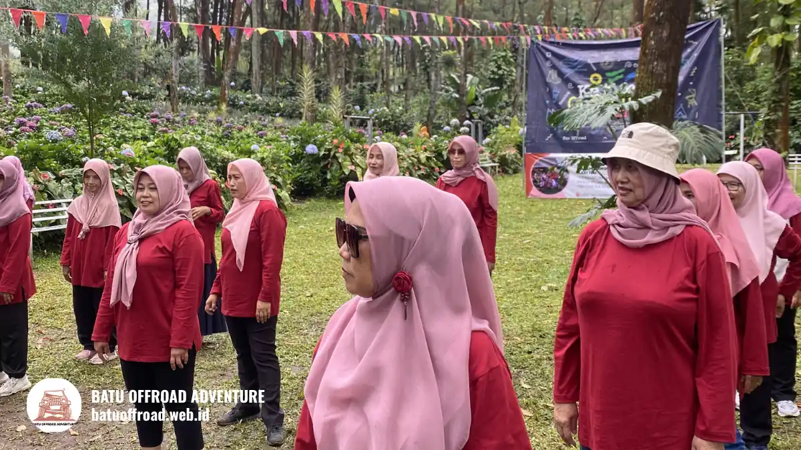

Manfaat Outbound di Alam Terbuka untuk Kerja Sama Tim
Manfaat outbound di alam terbuka bagi tim mencakup kerja sama yang lebih kompak, komunikasi lebih jelas, kepercayaan antaranggota, dan kepemimpinan yang tumbuh lewat tantangan bersama. Kegiatan di Coban Talun, Kota Batu, memadukan permainan terarah dan refleksi bersama instruktur.
- Outbound melatih kerja sama lewat tugas yang tidak bisa diselesaikan sendirian.
- Komunikasi dan kepercayaan terbentuk melalui pengalaman langsung, bukan teori.
- Karyawan baru dapat lebih cepat mengenal rekan lintas divisi.
- Efek terbaik muncul bila hasil refleksi ditindaklanjuti setelah acara.
- Outbound melengkapi, bukan menggantikan, pelatihan dan rapat kerja.
Apa Manfaat Outbound untuk Tim?
Manfaat outbound untuk tim adalah meningkatkan kerja sama, komunikasi, kepercayaan, dan kemampuan memecahkan masalah melalui permainan kelompok yang dipandu fasilitator berpengalaman.
Setiap game dirancang dengan tujuan belajar tertentu. Ada game yang menekankan pembagian peran, ada yang menekankan instruksi lisan, dan ada yang menekankan strategi bersama.
Peserta mengalami langsung bagaimana tim berhasil atau gagal. Pengalaman itu lebih mudah diingat daripada penjelasan di ruang kelas.
Manfaat ini bergantung pada kesiapan peserta dan mutu fasilitasi. Permainan tanpa refleksi hanya meninggalkan kesenangan sesaat.
Mengapa Alam Terbuka Membuat Pembelajaran Lebih Efektif?
Alam terbuka membantu pembelajaran karena suasana yang segar dan jauh dari rutinitas membuat peserta lebih santai, aktif bergerak, dan lebih terbuka berinteraksi dengan rekan.
Di ruang rapat, hierarki jabatan sering terasa kuat. Di lapangan terbuka, peserta bermain dalam posisi yang lebih setara, sehingga ide dari anggota yang pendiam pun lebih mudah muncul.
Lingkungan sejuk di kawasan Kota Batu juga membuat aktivitas fisik ringan terasa nyaman. Peserta tidak mudah jenuh dibandingkan duduk berjam-jam di dalam ruangan.
Faktor cuaca tetap perlu dipertimbangkan agar aktivitas aman dan nyaman.
Kemampuan Apa Saja yang Terlatih Lewat Outbound?
Outbound melatih kerja sama, komunikasi, kepercayaan, kepemimpinan, pengambilan keputusan, dan ketahanan menghadapi tantangan, tergantung jenis game yang dipilih.
Kerja sama terlatih ketika tim harus membagi tugas. Komunikasi terlatih ketika instruksi yang kabur membuat tim gagal. Kepercayaan terlatih ketika peserta mengandalkan rekan dalam permainan tertentu.
Kepemimpinan berkembang karena peran ketua dapat digilir. Pengambilan keputusan terasah saat tim harus memilih strategi dalam waktu terbatas.
Setiap kemampuan tersebut perlu dikaitkan dengan konteks kerja atau belajar agar manfaatnya nyata.
Apakah Outbound Efektif untuk Karyawan Baru?
Outbound umumnya efektif untuk karyawan baru karena membantu mereka mengenal rekan lintas divisi secara santai dan mempercepat terbentuknya rasa nyaman dalam tim.
Karyawan baru sering sulit menembus lingkaran komunikasi yang sudah terbentuk. Permainan kelompok menciptakan alasan alami untuk berbicara dan saling membantu.
Agar efektif, penyelenggara sebaiknya mencampur anggota baru dan lama dalam setiap kelompok. Hindari permainan yang menempatkan individu dalam posisi memalukan.
Outbound tidak menggantikan proses orientasi kerja. Kegiatan ini hanya melengkapi aspek hubungan antarpribadi.

Sesi refleksi peserta outbound bersama instruktur di Kota Batu
Berapa Lama agar Manfaat Outbound Terasa?
Sebagian manfaat seperti suasana akrab terasa segera setelah acara, sedangkan perubahan kebiasaan kerja biasanya memerlukan tindak lanjut selama beberapa minggu atau lebih.
Durasi pastinya bervariasi, tergantung budaya tim, dukungan pimpinan, dan kualitas refleksi. Tidak ada angka tunggal yang berlaku untuk semua organisasi.
Pimpinan dapat membantu dengan merumuskan satu atau dua komitmen sederhana setelah acara, misalnya cara berbagi informasi antar divisi. Komitmen kecil yang diulang lebih tahan lama daripada rencana besar yang dilupakan.
Apa Bedanya Outbound dengan Rapat Biasa?
Outbound berbeda dari rapat biasa karena peserta belajar lewat tindakan dan pengalaman langsung, sedangkan rapat berfokus pada pembahasan agenda melalui diskusi di dalam ruangan.
Rapat efektif untuk keputusan dan pembagian tugas. Outbound efektif untuk membangun hubungan dan membuka pola kerja yang tidak terlihat di meja rapat.
Keduanya saling melengkapi. Banyak organisasi mengadakan rapat evaluasi singkat setelah outbound untuk mengubah hasil refleksi menjadi rencana kerja konkret.
Bagaimana Agar Outbound Memberi Manfaat Maksimal?
Outbound memberi manfaat maksimal bila tujuan acara jelas, game dipilih sesuai tujuan, tim dibagi seimbang, refleksi dilakukan serius, dan ada tindak lanjut setelah acara.
Mulailah dengan satu pertanyaan sederhana, misalnya kemampuan apa yang ingin diperbaiki. Sampaikan tujuan itu kepada operator agar susunan game dapat disesuaikan.
Pastikan jadwal tidak terlalu padat. Sisakan waktu cukup untuk refleksi, karena sesi inilah yang menghubungkan permainan dengan pekerjaan sehari-hari.
Kesimpulan
Manfaat outbound di alam terbuka paling nyata ketika kegiatan dirancang untuk tujuan tertentu dan diikuti tindak lanjut. Pilih game yang sesuai kebutuhan tim, sisakan waktu refleksi, dan rumuskan komitmen sederhana setelah acara.
Ingin merasakan serunya langsung? Hubungi Batu Offroad Adventure di 0812-3398-9707 untuk info paket dan booking.
FAQ
-
Apa manfaat outbound untuk tim?
Outbound meningkatkan kerja sama, komunikasi, kepercayaan, dan kemampuan memecahkan masalah melalui permainan kelompok yang dipandu fasilitator dan diakhiri refleksi. -
Apakah efektif untuk karyawan baru?
Umumnya efektif karena karyawan baru berinteraksi santai dengan rekan lintas divisi. Hasil terbaik muncul bila kelompok dicampur antara anggota baru dan lama. -
Apa bedanya dengan rapat biasa?
Rapat membahas agenda lewat diskusi, sedangkan outbound melatih tim melalui pengalaman langsung. Keduanya saling melengkapi dan dapat dipakai berurutan.
Artikel Terkait